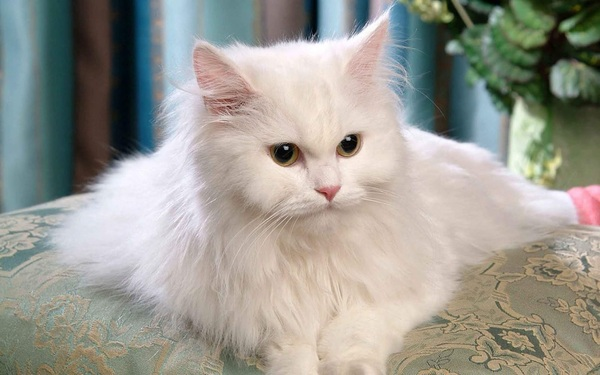
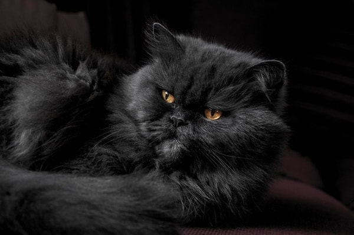
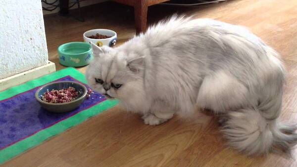
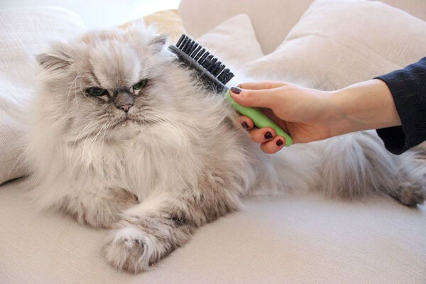
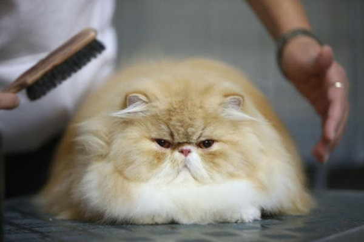

Mèo ba tư
Mèo Ba Tư là một trong những giống mèo cảnh được đông đảo người yêu mèo yêu mến, lựa chọn làm thú cưng trong gia đình. Sở dĩ như vậy là do ngoại hình của chúng mập mạp, đáng yêu với bộ lông vô cùng quyến rũ. Mặc dù giống mèo này chăm sóc khó khăn hơn so với những giống mèo cảnh khác nhưng do ngoại hình quá đẹp và thu hút nên ở nước ta rất nhiều bạn vẫn săn đón mèo Ba Tư
1. Nguồn gốc mèo Ba Tư
Ngay từ cái tên đã thể hiện xuất xứ của giống mèo này, mèo Ba Tư có nguồn gốc từ vương quốc Ba Tư cổ đại, ngày nay là đất nước Iran. Giống mèo này được coi là loài mèo bản địa tại Iran, chúng được phát hiện, chăm sóc và nuôi dưỡng bởi người dân Iran từ khá sớm. Về sau này, mèo Ba Tư đã được người Anh mang về quốc gia để nhân giống và kể từ đó, loài mèo Ba Tư phát triển mạnh mẽ, ngày càng trở nên phổ biến ở các nước Châu Âu.

Đặc biệt, vào khoảng thế kỷ XVII, nhờ vẻ ngoài cực kỳ kiêu sa, quyến rũ, mèo Ba Tư còn là một trong những thú cưng yêu thích nhất của nữ hoàng Anh. Hiện nay, thị trường có nhiều chủng loại, giống mèo Ba Tư đến từ khắp nơi trên thế giới. Tuy nhiên, những chú mèo thuần chủng Ba Tư vẫn sở hữu ngoại hình nổi trội và được yêu thích hơn cả.
2. Đặc điểm ngoại hình
Chắc chắn điểm nổi bật nhất khiến mèo Ba Tư nhận được sự yêu mến, ưa chuộng của rất nhiều người đó chính là ngoại hình quý phái, quyến rũ và không kém phần đáng yêu. Mèo Ba Tư có chiếc đầu lớn, tròn, hai bá mầu bĩnh, mũi của chúng khá ngắn và mõm sâu, tổng thể khuôn mặt phẳng. Cùng với đó là đôi tai nhỏ hình tam giác dựng đứng, đôi mắt to, có phần sắc sảo khiến mèo Ba Tư càng thêm phần kiêu sa hơn.
Giống mèo thuần chủng này có đặc điểm tuyệt đối khi nhận diện đó là mũi bé và mắt to, chính vì thế, khi nuôi mèo Ba Tư, bạn cũng nên chú ý vì chúng có thể gặp phải tình trạng hay chảy nước mắt và hít thở khó khăn hơn.

Đặc điểm thu hút nhất của loài mèo này đến từ bộ lông. Lông mèo Ba Tư rất dày và dài, bộ lông bao gồm 2 lớp, phủ dài khắp cơ thể và ở những khu vực nhu dưới cổ, bụng, đuôi và dưới ngực của chúng lông có xu hướng mọc dày hơn. Phần đuôi của mèo Ba Tư khá dài, lông phủ dày, mỗi khi di chuyển, đuôi của chúng dựng lên và lớp lông dài phủ xuống vô cùng quyến rũ.
Bên cạnh đó, bộ lông mềm mượt, quý phái của giống mèo này còn có rất nhiều các màu sắc khác nhau. Có thể kể đến như: kem, màu vàng, đen, trắng, nâu, xám xanh, đỏ, màu vằn vện, màu hoa cà, bạc, nâu vá, màu sô cô la, màu khói,...
3. Tính cách của mèo Ba Tư
Mèo Ba Tư nổi tiếng là giống mèo thân thiện, hiền lành, thông minh và rất ôn hòa với cả con người và những loài vật khác. Giống mèo này không thích chạy nhảy, nghịch ngợm hay phá phách như những giống khác, chính vì thế bạn có thể hoàn toàn an tâm khi nuôi mèo Ba Tư vì không cần phải uốn nắn hay dạy dỗ nhiều.
Tuy không nghịch ngợm nhưng mèo Ba Tư cũng rất vui vẻ, mang đến những phút giây thư giãn khi bạn vui đùa với chúng, loài mèo này rất hiền nên bạn an tâm có thể để chúng chơi cùng trẻ em.

Mèo Ba Tư có thói quen sống rất ôn hòa, tình cảm và cực kỳ trung thành với chủ nhân. Đặc biệt, loài mèo này khá nhạy cảm, biết cách thể hiện, chúng luôn ngoan ngoãn, cư xử nhẹ nhàng nên được rất nhiều người yêu quý. Bên cạnh đó, nhờ tập tính hòa nhã, mèo Ba Tư không yêu cầm chăm sóc hay quá cưng chiều, bạn không cần dành quá nhiều thời gian để cưng nựng chúng, do đó, ngay cả những người bận rộn cũng có thể nuôi mèo Ba Tư. Loài mèo này có thể ở trong nhà cả ngày nếu bạn đi làm mà không quấy phá hay cảm thấy buồn chán.
4. Cách nuôi mèo Ba Tư
Nhìn chung, mèo Ba Tư hiền lành, khỏe mạnh nên cách nuôi mèo Ba Tư cũng không quá cầu kỳ, không tốn quá nhiều công chăm sóc. Chủ yếu bạn nên lưu ý lựa chọn thức ăn cho mèo Ba Tư để chúng phát triển toàn diện và đặc biệt là việc vệ sinh cơ thể vì giống mèo này có bộ lông khá dày, dài, rụng nhiều.
TMèo Ba Tư có sở thích ăn các loại thức ăn từ thịt, cụ thể như thịt bò, thịt gà, cá. Tuy nhiên nên hạn chế cho mèo ăn thịt lợn vì có nhiều mỡ. Các loại nội tạng cũng rất phù hợp chế biến thành thức ăn cho loài mèo này. Lưu ý không nên cho mèo Ba Tư ăn thực phẩm sống, đồng thời kết hợp thêm cháo, rau củ quả để bổ sung vitamin cần thiết cho chúng.
Cách vệ sinh cho mèo
Trong cách nuôi mèo Ba Tư, vấn đề vệ sinh cơ thể cho chúng là rất quan trọng vì đặc điểm bộ lông dài dày. Theo đó, bạn cần thường xuyên chải lông cho chúng để loại bỏ đi những sợi lông chết. Có thể đưa chúng đi cắt tỉa lông nếu quá dài. Đồng thời, nên tắm cho mèo Ba Tư thường xuyên, khi tắm chú ý vệ sinh tai, mắt, mũi và miệng, răng, cần sấy hoặc lau khô lông ngay sau khi tắm.
5. Các giống mèo Ba Tư và mức giá bán

Giá của mèo Ba Tư giá bao nhiêu phụ thuộc vào nhiều yếu tố như đặc điểm ngoại hình, giới tính, tính cách, màu lông,... nhưng tiêu chí quan trọng nhất và cũng khiến mức giá chênh lệch nhất đó là nguồn gốc
Hiện nay ở nước ta có 3 nguồn bán mèo Ba Tư chính đó là mèo nhân giống trong nước, nhập khẩu từ trại mèo Thái Lan và nhập trực tiếp từ Châu Âu. Trong đó, giá mèo Ba Tư trong nước là rẻ nhất, những chú mèo được nhập từ Thái Lan có mức giá sẽ cao hơn từ 1.5 đến 2 lần. Đặc biệt, nếu mua mèo Ba Tư nhập Châu Âu, bạn có thể hoàn toàn yên tâm vì những chú mèo này luôn đảm bảo có giấy tờ, gia phả rõ ràng nhưng đi kèm với đó là mức giá rất cao, chưa kể các chi phí khác, giá nhập mèo Ba Tư đã lên đến 2000$.
Bên cạnh đó, các loại giấy tờ chứng thực nguồn gốc, gia phả mèo bố mẹ cũng có ảnh hưởng đến giá bán mèo Ba Tư. Hiển nhiên, mèo có giấy tờ sẽ được bán với mức giá cao hơn hẳn.

Nhìn chung, mèo Ba Tư là giống mèo có ngoại hình đẹp, với bộ lông dài, dày quyến rũ, đồng thời chúng thân thiện, hiền lành, khỏe mạnh và ít ốm bệnh nên việc nuôi dưỡng cũng tương đối dễ dàng. Bạn chỉ cần lưu ý nhất đến việc vệ sinh và chăm sóc bộ lông cho chúng.